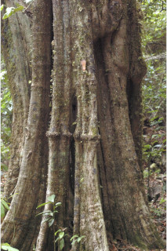
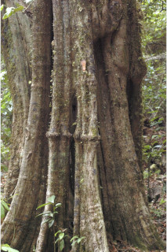
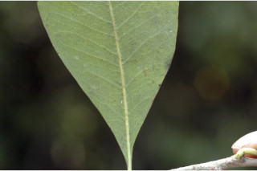
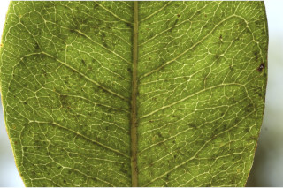
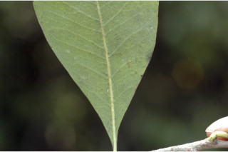
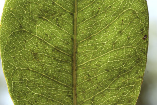

Trees up to 15 m tall.
15 ಮೀ ಎತ್ತರದವರೆಗಿನ ಮರಗಳು.
Trees up to 15 m tall.
மரங்கள் 15 மீ. உயரம் வரை வளரக்கூடியது.
Trunk fluted; bark reddish brown, irregularly large flaky; blaze pinkish.
ಕಾಂಡ ಕೊರಕಲುಗಳ ಸಮೆತವಿರುತ್ತದೆ;ತೊಗಟೆ ಕೆಂಪು ಮಿಶ್ರಿತ ಕಂದು ಬಣ್ಣದಲ್ಲಿದ್ದು ಅನಿಯತವಾಗಿ ಚಕ್ಕೆಯೇಳುವ ಮಾದರಿಯಲ್ಲಿರುತ್ತದೆ;ಕಚ್ಚು ಮಾಡಿದ ಜಾಗ ನಸು ಕೆಂಪು.
Trunk fluted; bark reddish brown, irregularly large flaky; blaze pinkish.
மரத்தண்டு குறுக்குவெட்டுத் தோற்றத்தில் ஒழுங்கற்ற வளையமானது; மரத்தின் பட்டை சிவப்பு-ப்ரவுன் நிறமானது, ஒழுங்கற்ற பெரிய செதில்களாக உதிருபவை; உள்பட்டை பிங்க் நிறமானது.
Trunk and branches thorny; young branchlets terete, lenticellate, grey pubescent, later glabrous.
ಕಾಂಡ ಮತ್ತು ಕವಲುಗಳು ದೊಡ್ಡ ಮುಳ್ಳುಗಳ ಸಮೇತವಿರುತ್ತವೆ;ಎಳೆಯ ಕಿರುಕೊಂಬೆಗಳು ದುಂಡಾಗಿದ್ದು, ವಾಯುವಿನಿಮಯ ಬೆಂಡು ರಂಧ್ರಗಳ ಸಮೇತವಿರುತ್ತವೆ, ಬೂದು ಬಣ್ಣದ ಮೃದು ತುಪ್ಪಳದಿಂದ ಕೂಡಿದ್ದು ನಂತರ ರೋಮರಹಿತವಾಗುತ್ತವೆ.
Trunk and branches thorny; young branchlets terete, lenticellate, grey pubescent, later glabrous.
மரத்தின் நடுத்தண்டின் தளப்பகுதியில் மற்றும் கிளைகளில் முட்களுடையது; சிறியநுனிக்கிளைகள் குறுக்குவெட்டுத் தோற்றத்தில் வளையமானது, பட்டைத்துளைகள் (லெண்டிசெல்லேட்) உடையது, சாம்பல் நிறமான உரோமங்களுடையது, முதிரும் போது உரோமங்களற்றது.
Latex white, profuse.
ಸಸ್ಯ ಕ್ಷೀರ ಹಾಲಿನ ಬಿಳಿ ಬಣ್ಣ ಹೊಂದಿದ್ದು ವಿಫುಲವಾಗಿರುತ್ತದೆ.
Latex white, profuse.
வெள்ளை நிற பால் அதிகளவு சுரக்கிறது.
Leaves simple, alternate, spiral; petiole 0.4-0.7 cm long, planoconvex in cross section, pubescent; lamina 4-10 X 2-5 cm, narrow obovate to elliptic-obovate, apex subacute or obtuse, base cuneate or attenuate, margin entire, coriaceous, glabrous except midrib; midrib flat above; secondary nerves 10-12; tertiary nerves admedially ramified.
ಎಲೆಗಳು ಸರಳವಾಗಿದ್ದು ಪರ್ಯಾಯ ಮತ್ತು ಸುತ್ತು ಜೋಡನಾ ವ್ಯವಸ್ಥೆಯಲ್ಲಿರುತ್ತವೆ; ತೊಟ್ಟುಗಳು 0.4 -0.7 ಸೆಂ.ಮೀ. ಉದ್ದವಿದ್ದು, ಅಡ್ಡ ಸೀಳಿದಾಗ ಸಪಾಟ ಪೀನ ಮಧ್ಯದ ಆಕಾದಲ್ಲಿರುತ್ತವೆ,ಮೃದುತುಪ್ಪಳದಿಂದ ಕೂಡಿರುತ್ತವೆ; ಪತ್ರಗಳು 4 -10 X 2 – 5 ಸೆಂ.ಮೀ. ಗಾತ್ರ, ಸಂಕುಚಿತ ಬುಗುರಿಯಿಂದ ಅಂಡವೃತ್ತ-ಬುಗುರಿಯವರೆಗಿನ ಆಕಾರ ಹೊಂದಿದ್ದು, ಉಪ-ಚೂಪಾದ ಅಥವಾ ಚೂಪಲ್ಲದ ಮಾದರಿಯ ತುದಿ,ಬೆಣೆಯಾಕಾರದ ಅಥವಾ ಒಳಬಾಗಿದ ಮಾದರಿಯ ಬುಡ, ನಯವಾದ ಅಂಚು, ತೊಗಲನ್ನು ಹೋಲುವ ಮೇಲ್ಮೈ ಹೊಂದಿದ್ದು ಮಧ್ಯನಾಳವನ್ನು ಹೊರತು ಪಡಿಸಿ ಪಡಿಸಿ ಮಿಕ್ಕೆಲ್ಲಾ ಭಾಗಗಳು ರೋಮರಹಿತವಾಗಿರುತ್ತದೆ; ಮಧ್ಯನಾಳ ಪತ್ರದ ಮೇಲ್ಭಾಗದಲ್ಲಿ ಚಪ್ಪಟೆಯಾಗಿರುತ್ತದೆ; ಎರಡನೇ ದರ್ಜೆಯ ನಾಳಗಳು 10 - 12 ಜೋಡಿಗಳಿರುತ್ತವೆ;ಮೂರನೇ ದರ್ಜೆಯ ನಾಳಗಳ ಕವಲುಗಳು ಎಲೆಯ ಅಕ್ಷದ ಕಡೆಗಿರುತ್ತವೆ.
Leaves simple, alternate, spiral; petiole 0.4-0.7 cm long, planoconvex in cross section, pubescent; lamina 4-10 X 2-5 cm, narrow obovate to elliptic-obovate, apex subacute or obtuse, base cuneate or attenuate, margin entire, coriaceous, glabrous except midrib; midrib flat above; secondary nerves 10-12; tertiary nerves admedially ramified.
இலைகள் தனித்தவை, மாற்றுஅடுக்கமானவை, சுழல் போன்று அமைந்தவை; இலைக்காம்பு 0.4-0.7 செ.மீ. நீளமானது, குறுக்குவெட்டுத் தோற்றத்தில் பிளேனோகான்வக்ஸ், உரோமங்களுடையது; இலை அலகு 4-10 X 2-5 செ.மீ., குறுகிய தலைகீழ் முட்டை வடிவானது முதல் நீள்வட்டம்-தலைகீழ் முட்டை வடிவானது, அலகின் நுனி கிட்டதட்ட கூரியது அல்லது மெட்டையானது, அலகின் தளம் ஆப்பு வடிவானது அல்லது அட்டனுவேட், அலகின் விளிம்பு முழுமையானது, கோரியேசியஸ், அலகின் கீழ்பரப்பில் மையநரம்பயை தவிர பிற பகுதிகள் உரோமங்களற்றது; மையநரம்பு மேற்புறத்தில் அலகின் பரப்பிற்கு சமமானது; இரண்டாம் நிலை நரம்புகள் 10-12 ஜோடிகள்; மூன்றாம் நிலை நரம்புகள் அட்மீடியல்லி ராமிபைடு.
Flowers in axillary clusters, white; pedicel ca. 0.7 cm long.
ಹೂಗಳು ಅಕ್ಷಾಕಂಕುಳಿನಲ್ಲಿನ ಗುಚ್ಛಗಳಲ್ಲಿರುತ್ತವೆ ಮತ್ತು ಬಿಳಿ ಬಣ್ಣದಲ್ಲಿರುತ್ತವೆ; ತೊಟ್ಟುಗಳು ಅಂದಾಜು 0.7 ಸೆಂ.ಮೀ.ವರೆಗಿನ ಉದ್ದವಿರುತ್ತವೆ.
Flowers in axillary clusters, white; pedicel ca. 0.7 cm long.
மலர்கள் இலைக்கோணங்களில் தொகுப்பாகமைந்தவை, வெள்ளை நிறமானது; மலர்காம்பு 0.7 செ.மீ. நீளமானது.
Berry, ovoid-ellipsoid, ca. 2.5 cm long; seed one.
ಬೆರ್ರಿ ಅಂಡ - ಅಂಡವೃತ್ತದ ಆಕಾರದಲ್ಲಿದ್ದು ಅಂದಾಜು 2 ಸೆಂ.ಮೀ. ಉದ್ದವಿರುತ್ತದೆ; ಬೀಜದ ಸಂಖ್ಯೆ 1.
Berry, ovoid-ellipsoid, ca. 2.5 cm long; seed one.
முழுச்சதைகனி (பெர்ரி), முட்டை-நீள்வட்ட வடிவானது, 2.5 செ.மீ. நீளமானது; ஒர் விதையுடையது.
 



 


